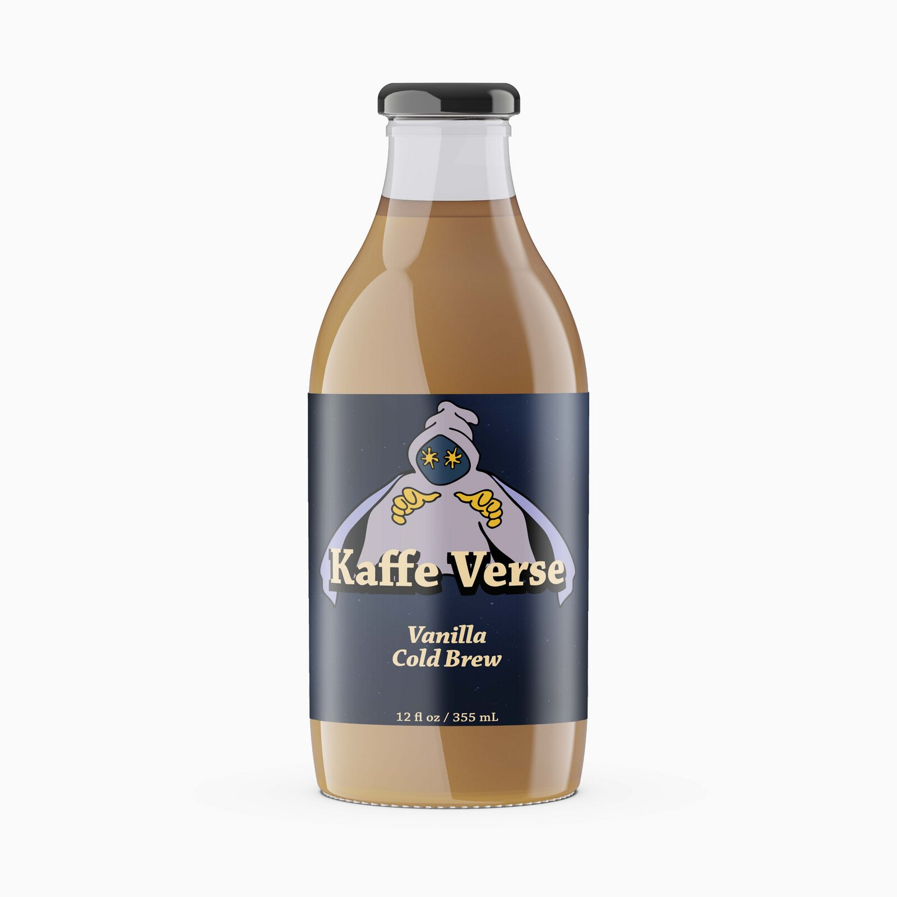
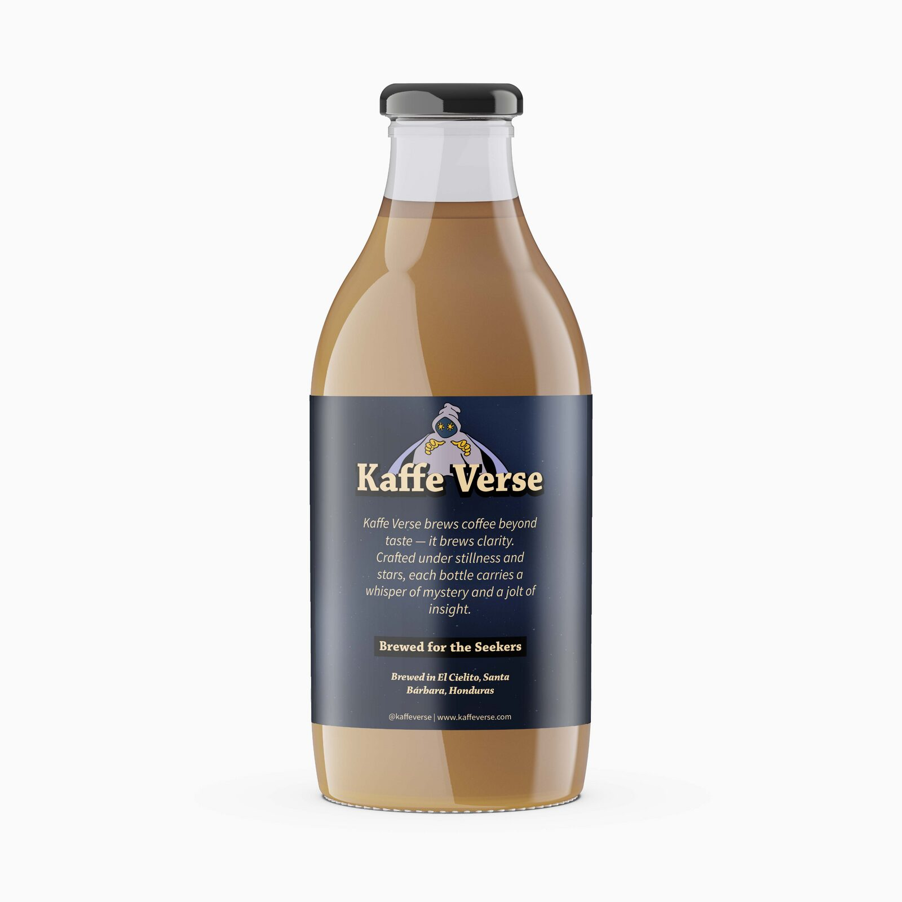
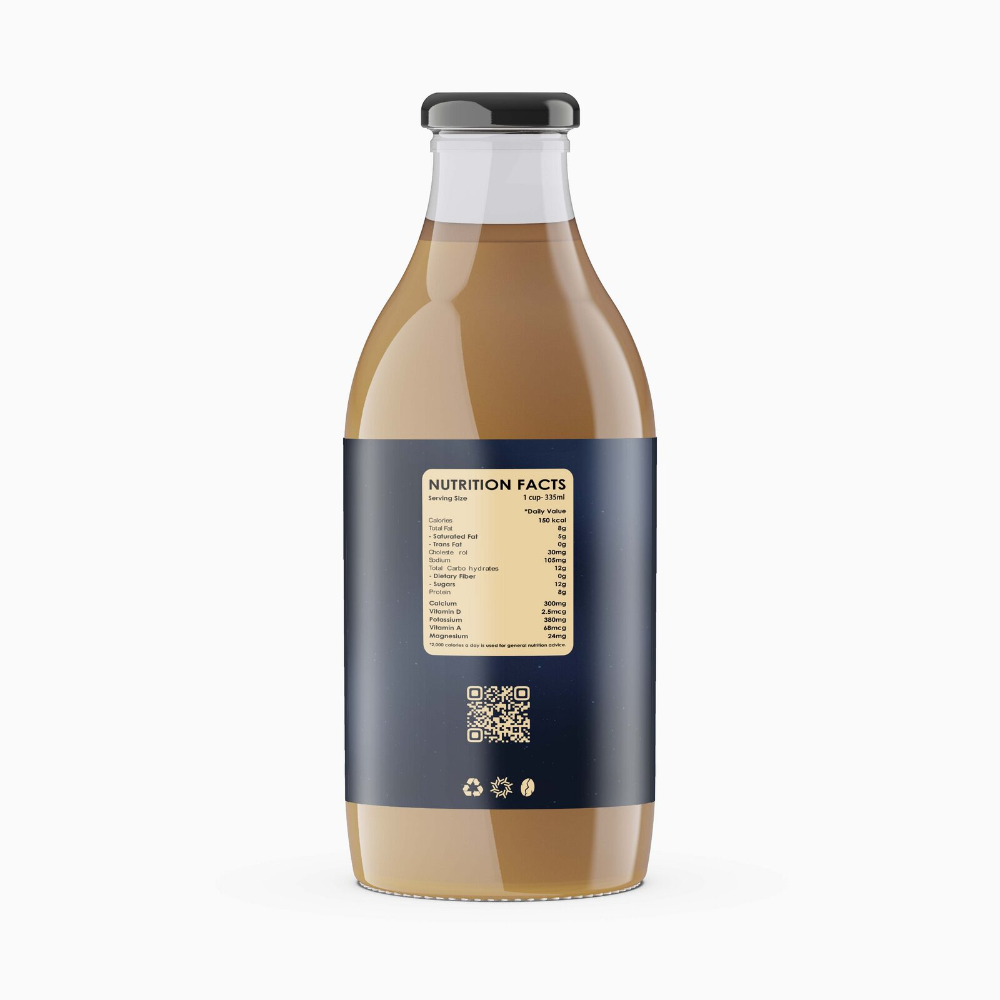
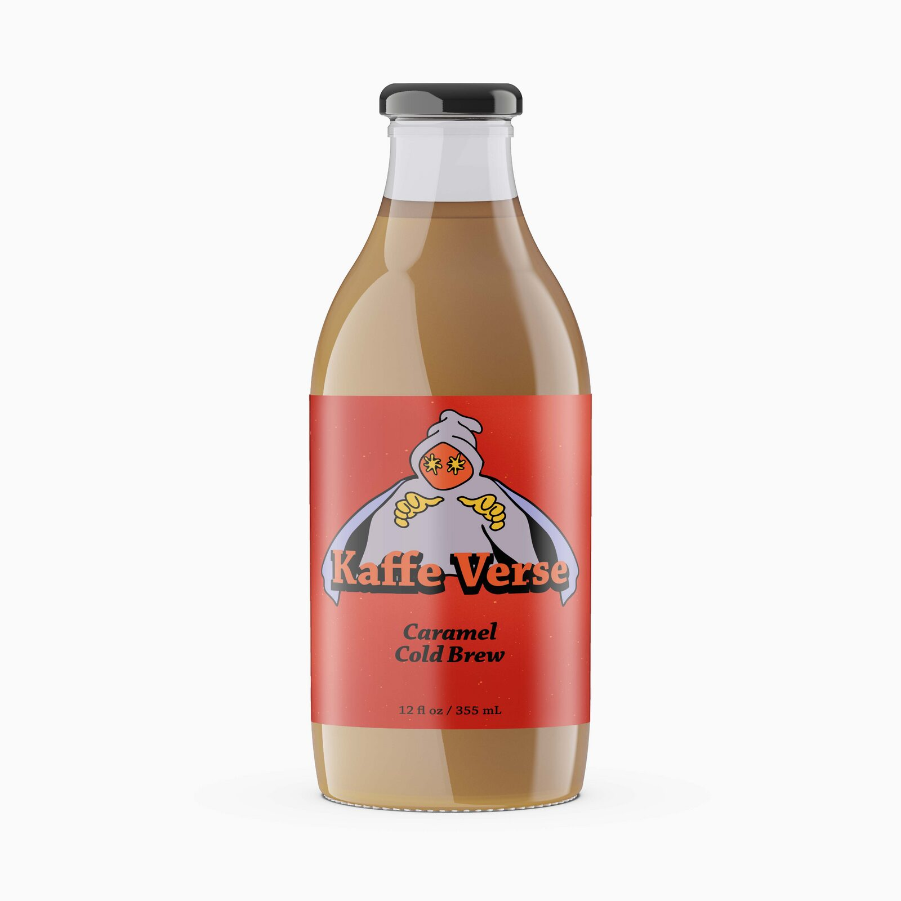
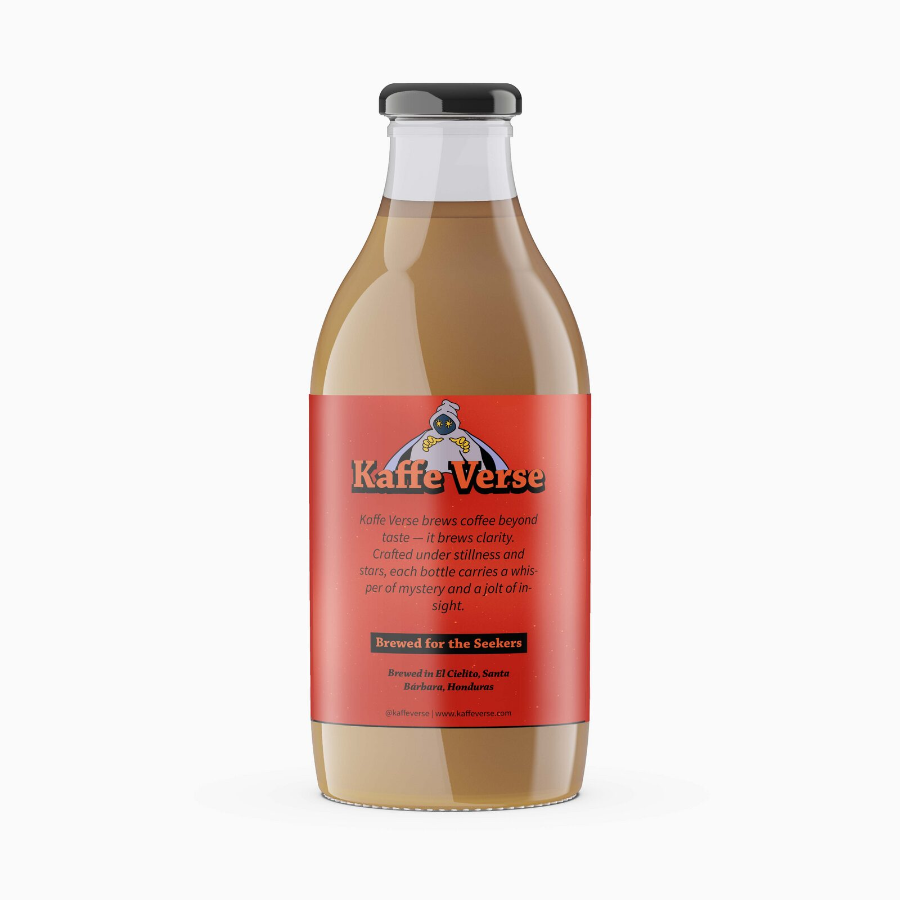
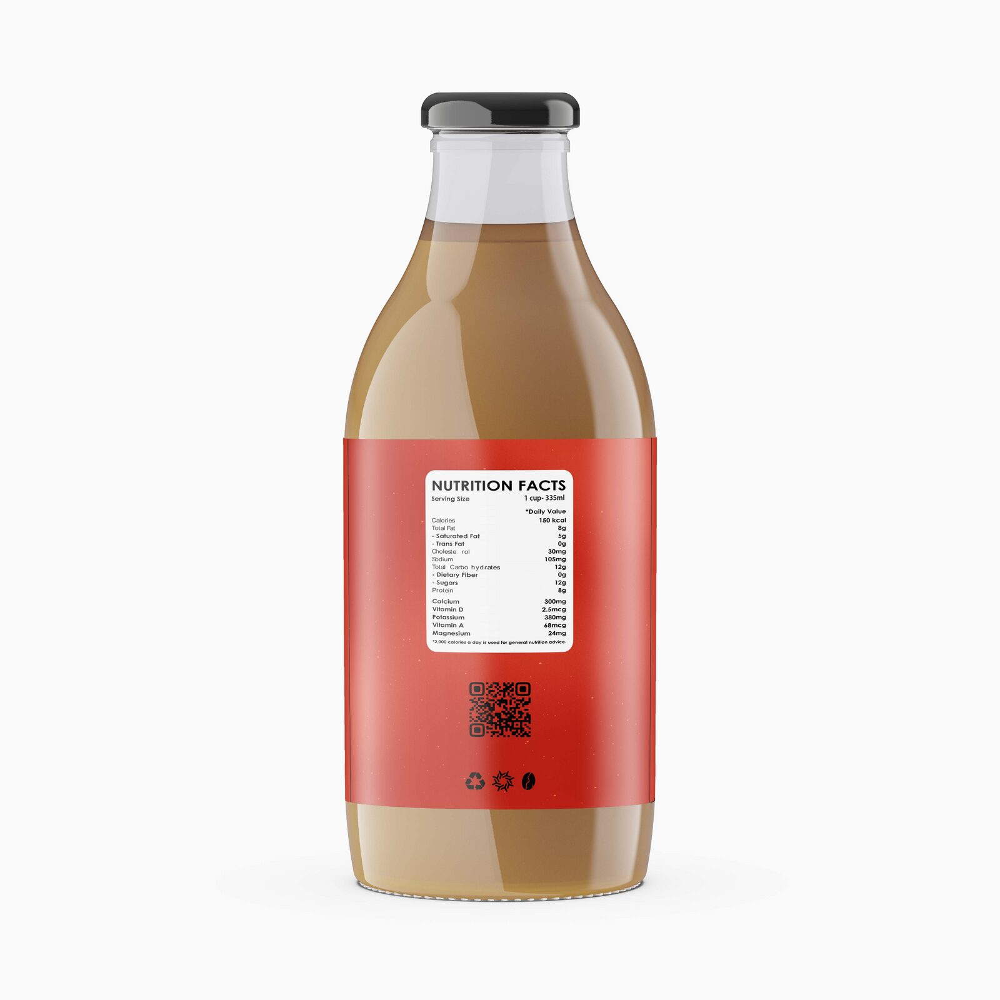

A cold brew brand for the curious — built around a hooded seer, a celestial mood, and the idea that some coffee is meant for clarity, not just caffeine.
Kaffe Verse is a premium cold brew brand developed as a school project. The concept: a coffee that positions itself against the energy-drink loudness of the category by leaning into stillness, mystery, and the idea of "brewing clarity."
The hero of the identity is a hooded mystic figure with star-shaped eyes — a seer drawn under stillness and stars. The tagline "Brewed for the Seekers" reinforces the positioning: this is coffee for people who want their morning ritual to mean something, not just to wake them up.
The brand is sourced (fictionally) from El Cielito, Santa Bárbara, Honduras — a personal touch grounded in real Honduran coffee country.
What I designed: the logo, the character illustration, the full label system (front, back, nutrition), and the color variants. The bottle itself is a commercial mockup — the labels were designed from scratch to wrap that bottle.
The Vanilla variant anchors the brand in deep navy and warm cream, with a scattered-stars texture pulling the celestial concept directly into the packaging. Cream and pale gold serve as the warm-light counterpoint — the "stillness and stars" the brand description promises.
Three labels were designed to wrap a single bottle: a front label carrying the logo and flavor, a back label carrying the brand story, and a side label with nutrition facts and a QR code.
The character anchors the front. The flavor name sits below in italic serif, sized to recede behind the logo.

A short brand statement, a tagline ("Brewed for the Seekers"), origin line, and social handle.

Standard nutrition facts panel, scannable QR, and a small icon row (recycle, sun, coffee bean) for the side panel.

"Kaffe Verse brews coffee beyond taste — it brews clarity. Crafted under stillness and stars, each bottle carries a whisper of mystery and a jolt of insight."
To prove the system flexed beyond a single SKU, I designed a second flavor: Caramel Cold Brew. Same character, same label architecture, same typography — but the navy palette swaps to warm red, the gold logo type retunes to a burnt orange, and the character's eyes shift from yellow stars to red.
The goal was to keep the system recognizable on the shelf while signaling a different flavor profile. Same world, different mood.


